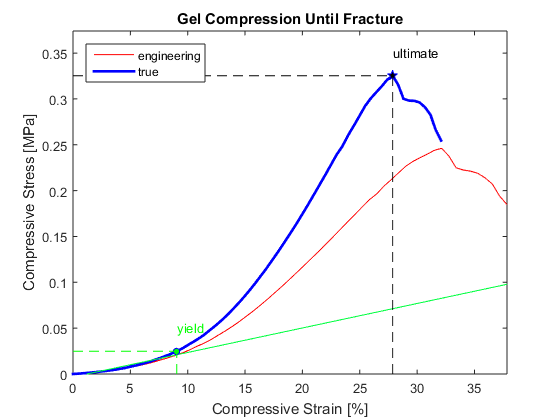

Compression Testing Analysis
compression of a cylindrical gel with height = L [mm] and diameter = d [mm] by Roche C. de Guzman, Ph.D. Hofstra University
Contents
Clear Previous
clear; clc; close('all');
Given
Data = xlsread('DataDispLoad'); % read Excel file: DataDispLoad.xlsx dL = Data(:,1)'; % relative displacement [mm] data F = Data(:,2)'; % load = force [N] data ADF = 5; % adjustment factor for zeroing L = 1.5875; % height of the cylinder [mm] d = 4.7625; % diameter of the cylinder [mm]
Computations
% get the zero point of force NF = numel(F); % number of elements of F PosF_L = F > 0; % logical positive IndV = find(PosF_L); % index of positives NIndV = numel(IndV); % number of elements of IndV Nneg = NF-NIndV; % number of elements of negatives Diff = zeros(1,NIndV-ADF); for c1 = 1:NIndV-ADF Diff(c1) = IndV(c1+ADF)-IndV(c1); % difference between points separated by ADF end Diff2 = Diff(2:end)-Diff(1:end-1); % difference between 2 adjacent points for c2 = 1:c1-1 if Diff2(c2) ~= 0 Diff2(c2) = c2; % replaces the elements with increasing counter end end IndZero = max(Diff2)+Nneg+1; % index of zero F % zeroed dl and F dL = dL(IndZero:end)-dL(IndZero); % relative displacement [mm] F = F(IndZero:end)-F(IndZero); % force [N] % intensive properties r = d/2; % radius [mm] A = pi*r^2; % cross-sectional area [mm^2] A = A/1e6; % cross-sectional area [m^2] strain = dL/L; % strain [mm/mm] stress = F/A; % stress [N/m^2 = Pa] % adjust units strain = strain*100; % strain [%] stress = stress/1e6; % stress [MPa] % locate the ultimate stress dsigma = diff(stress); % derivative of stress Ndsig = numel(dsigma); % number of elements of dsigma for c3 = 1:Ndsig-ADF if all(dsigma(c3:c3+ADF)<0) UsigInd = c3; % index of the ultimate stress break end end % trim data cutoff = round(UsigInd*1.15); % maximum index strain = strain(1:cutoff); % strain [%] stress = stress(1:cutoff); % stress [MPa] % readjust the zero Ustr = max(stress); % maximum stress [MPa] limStr = Ustr*0.01; % 1% of maximum stress [MPa] Lsig = stress >= limStr; % logical true LsigInd = find(Lsig); % index of true zInd = LsigInd(1); % new index strain = strain(zInd:end)-strain(zInd); % strain [%] stress = stress(zInd:end)-stress(zInd); % stress [MPa] % true values strainT = log(1+strain/100)*100; % true strain [%] stressT = stress.*(1+strain/100); % true stress [MPa] [UCS,UCSi] = max(stressT); % ultimate compressive strength [MPa] UCstrain = strainT(UCSi); % ultimate compressive strain [%] % linear regression to determine the compressive modulus ND = numel(stressT); % number of elements % initial values RSQ = zeros(1,ND-2); x = NaN(1,ND); y = x; yf = y; m = RSQ; b = m; dy = b; for c4 = 1:ND-2 x = strainT(1:c4+2); % x observed [%] y = stressT(1:c4+2); % y observed [MPa] m(c4) = (((c4+2)*sum(x.*y))-(sum(x)*sum(y)))/(((c4+2)*sum(x.^2))-(sum(x)^2)) ; % slope of line fit [MPa/% = 100*MPa] b(c4) = ((sum(y))-(m(c4)*(sum(x))))/(c4+2); % y-intercept of line fit [MPa] yf = m(c4)*x + b(c4); % y fit [MPa] SSE = sum((y-yf).^2); % sum of squares error SST = sum((y-mean(y)).^2); % sum of squares total RSQ(c4) = 1 - (SSE/SST); % coefficient of determination vector %xi(c4) = -b/m(c4); dy(c4) = abs(y(c4+2) - (m(c4)*x(c4+2)+b(c4)))/UCS; % change in y over UCS end [~,ECi] = max(dy >= 0.01); % index of the compressive modulus, 10% cutoff rsq = RSQ(ECi); % r^2 = coefficient of determination EC = m(ECi)*100; % compressive modulus [MPa] % yield values Ystrain = strainT(ECi+2); % yield strain [%] Ystress = stressT(ECi+2); % yield stress [%]
Display Results
% animation to fit the line for c5 = 1:ND-2 plot(strain(1:ND-2),stress(1:ND-2),'-r'); % engineering hold('on'); plot(strainT(1:ND-2),stressT(1:ND-2),'-b','linewidth',2); % true legend('engineering','true','location','northwest'); title('Gel Compression Until Fracture'); xlabel('Compressive Strain [%]'); ylabel('Compressive Stress [MPa]'); plot([strain(1) strain(end)],[m(c5)*strain(1)+b(c5) m(c5)*strain(end)+b(c5)],'color',[0 1 0.25]); axis([0 strain(ND-2) 0 UCS*1.15]); drawnow; hold('off'); end for c6 = ND-2:-1:1 plot(strain(1:ND-2),stress(1:ND-2),'-r'); % engineering hold('on'); plot(strainT(1:ND-2),stressT(1:ND-2),'-b','linewidth',2); % true legend('engineering','true','location','northwest'); title('Gel Compression Until Fracture'); xlabel('Compressive Strain [%]'); ylabel('Compressive Stress [MPa]'); plot([strain(1) strain(end)],[m(c6)*strain(1)+b(c6) m(c6)*strain(end)+b(c6)],'color',[0 1 0.25]); axis([0 strain(ND-2) 0 UCS*1.15]); drawnow; hold('off'); if m(c6)*100 == EC plot(strain(1:ND-2),stress(1:ND-2),'-r'); % engineering hold('on'); plot(strainT(1:ND-2),stressT(1:ND-2),'-b','linewidth',2); % true legend('engineering','true','location','northwest'); title('Gel Compression Until Fracture'); xlabel('Compressive Strain [%]'); ylabel('Compressive Stress [MPa]'); % yield plot([strain(1) strain(end)],[m(c6)*strain(1)+b(c6) m(c6)*strain(end)+b(c6)],'-g','color',[0 1 0.25]); plot(Ystrain,Ystress,'ob','markerfacecolor',[0 1 0],'markersize',5); plot([Ystrain Ystrain],[0 Ystress],'--g'); plot([0 Ystrain],[Ystress Ystress],'--g'); text(Ystrain,Ystress+0.08*UCS,'yield','color',[0 1 0]); % ultimate plot(UCstrain,UCS,'pb','markerfacecolor',[0 0 0],'markersize',8); plot([UCstrain UCstrain],[0 UCS],'--k'); plot([0 UCstrain],[UCS UCS],'--k'); text(UCstrain,UCS+0.08*UCS,'ultimate'); axis([0 strain(ND-2) 0 UCS*1.15]); hold('off'); break; end end % command window display disp('========================================================================================'); disp([' The gel was found to have a compressive modulus of ' num2str(EC) ' MPa or ' num2str(EC*1000) ' kPa.']); disp([' Its yield strain is ' num2str(Ystrain) '%, while']); disp([' its yield strength is ' num2str(Ystress) ' MPa or ' num2str(Ystress*1000) ' kPa.']); disp([' Also, its ultimate compressive strain is ' num2str(UCstrain) '%, while']); disp([' its ultimate compressive strength is ' num2str(UCS) ' MPa or ' num2str(UCS*1000) ' kPa.']); disp('========================================================================================'); % write to Excel Results = {'Compressive Modulus of Elasticity [MPa]' 'Yield Strain [%]' 'Yield Stress [MPa]' 'Ultimate Compressive Strain [%]' 'Ultimate Compressive Stress [MPa]'; EC Ystrain Ystress UCstrain UCS}; % summary of results xlswrite('ResStressStrain.xlsx',Results); % write to Excel file: ResStressStrain.xlsx % Thank You!!!
======================================================================================== The gel was found to have a compressive modulus of 0.26708 MPa or 267.0761 kPa. Its yield strain is 9.0436%, while its yield strength is 0.024838 MPa or 24.8378 kPa. Also, its ultimate compressive strain is 27.871%, while its ultimate compressive strength is 0.32528 MPa or 325.2758 kPa. ========================================================================================